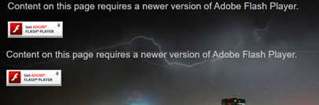
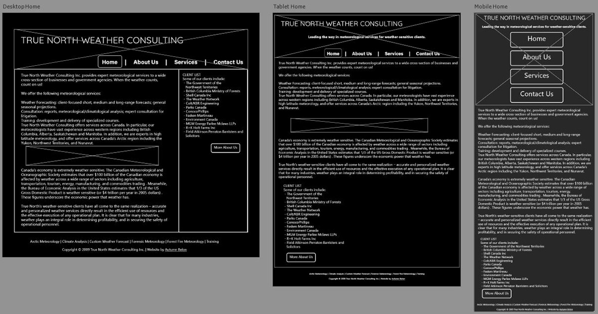
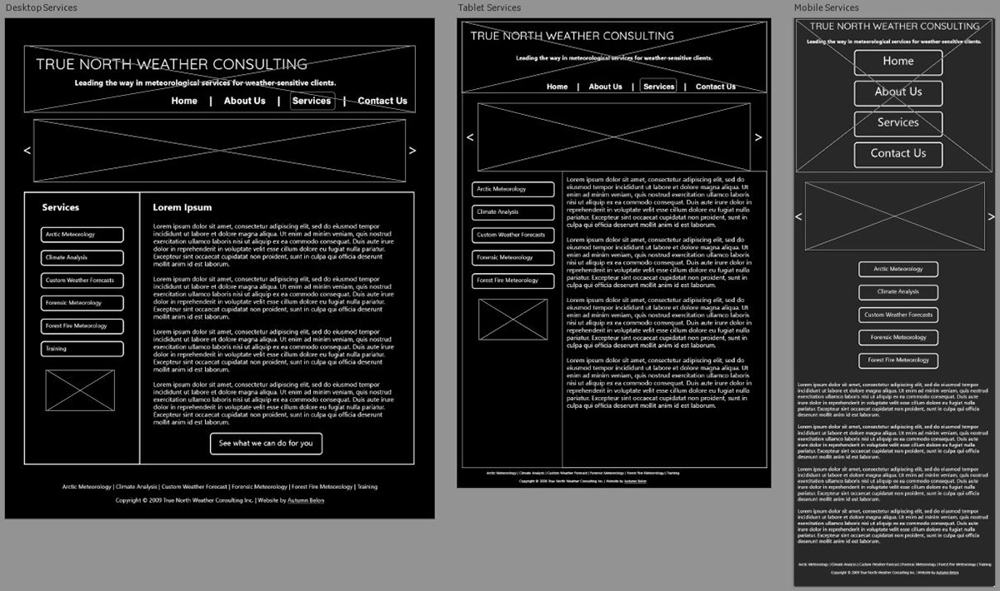
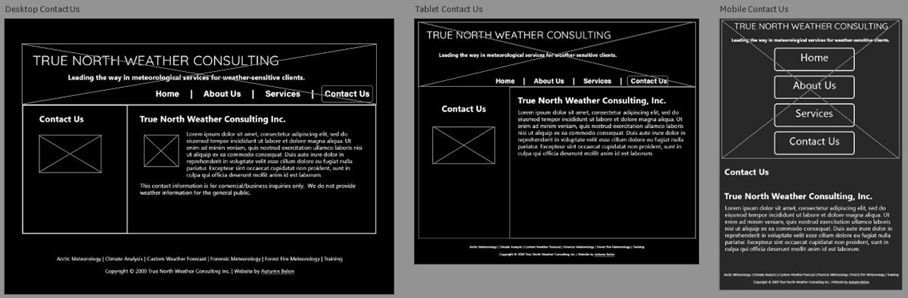

Coding for the Web
The Client:
True North Weather Consulting
The Ask:
True North Weather Consulting, a meteorology and fire-weather consulting firm located in Edmonton, Alberta, Canada, had a website that utilized outdated technology. True North Weather Consulting was looking to have their website recoded to be brought up to current technology standards. Namely, they wanted to no longer rely upon Flash Player, which has been discontinued by Adobe, and they wanted a site that would be mobile and tablet friendly.
Working with the brand’s existing assets, I made updates to the site and re-coded it to utilize updated technology and updated the accessibility to provide a unified user experience across devices and browsers.
Process Overview:
- Beginning with a Project Brief, I created this document to outline the work to be done.
- With stakeholder buy-in, the next step was to create Wireframes to lay out the basic design elements and outline how the webpage will be structured.
- Since True North Weather Consulting was not seeking any major changes to its site in terms of typeface, color scheme, and general layout, the next step was to code and implement the site.
- Finally, with stakeholder approval, I re-coded the website to the specifications outlined in the previous steps.
Process Details:
1. Project Brief
The first step was the project brief. A project brief provides a way to track progress, identify problems, state solutions, name deliverables, and identify a timeline. It's a formal document that outlines what will be done, when it will be done, and why it will be done.
Project
True North Weather is seeking a fresh, informative, functional advertising website refresh/redesign. TrueNorthWeather.com is hosted on the site owner’s ISP and will continue to be hosted there.
Client Information
True North Weather is a meteorology and fire-weather consulting firm located in Edmonton, Alberta, Canada.
True North Weather Consulting Inc. provides expert meteorological services to a wide cross-section of businesses and government agencies, offering the following meteorological services:
- Weather Forecasting: client-focused short, medium, and long-range forecasts; general seasonal projections.
- Consultation: reports, meteorological/climatological analysis; expert consultation for litigation.
- Training: development and delivery of specialized courses.
True North Weather Consulting offers services across Canada. True North Weather’s meteorologists have vast experience across western regions including British Columbia, Alberta, Saskatchewan, and Manitoba. In addition, True North Weather’s meteorologists are experts in high latitude meteorology and offer services across Canada’s Arctic region including the Yukon, Northwest Territories, and Nunavut.
Design Problems and Project Objectives
Problem: The current site utilizes outdated Adobe Flash Player, which means that their navigational menu is not visible. This makes navigating the site and locating information very difficult and results in an unattractive warning at the top of the site advising visitors to install Adobe Flash Player, as seen:
Solution: The website needs to be updated with code that does not make use of outdated technology. The solution would be to work with the existing brand’s assets to design and code a fully functional website.
Problem: While the current site is accessible on mobile and tablet, the overall design is not scaled appropriately for use on smaller devices. This makes the site very hard to read on mobile and tablet as the font size becomes very small on these devices.
Solution: Create CSS (Cascading Style Sheets) code that incorporates responsive design elements, providing for a more user friendly, unified user experience across multiple devices including desktop, tablet, and mobile devices.
Target Audience
Canada’s economy is extremely weather sensitive. The Canadian Meteorological and Oceanographic Society estimates that over $100 billion of the Canadian economy is affected by weather across a wide range of sectors including agriculture, transportation, tourism, energy, manufacturing, and commodities trading . Meanwhile, the Bureau of Economic Analysis in the United States estimates that 1/3 of the US Gross Domestic Product is weather sensitive (or $4 trillion per year in 2005) . These figures underscore the economic power that weather has.
True North’s weather-sensitive clients have all come to the same realization – accurate and personalized weather services directly result in the efficient use of resources and the effective execution of any operational plan.
True North Weather Consulting clients include:
- The Government of the Northwest Territories
- British Columbia Ministry of Forests
- Shell Canada Inc
- The Weather Network
- Colt/KBR Engineering
- Parks Canada
- ConocoPhillips
- Fasken Martineau
- Environment Canada
- MGM Energy
- Parlee Mclaws LLPs
- R+K Holt Farms Inc
- Field Atkinson Perraton Barristers and Solicitors
In short, True North Weather’s customers are owners, CEOs, operations managers, and planners for Canada’s government and private sector businesses and service providers across Canada’s western regions including British Columbia, Alberta, Saskatchewan and Manitoba as well as high latitude geographical areas across Canada’s Arctic region including the Yukon, Northwest Territories, and Nunavut.
Project Scope
What will be included in the project?
- Creation of site navigation: Home, About Us, Services, Arctic Meteorology, Climate Analysis, Custom Weather Forecast, Forensic Meteorology, Forest Fire Meteorology, Training, Contact Us.
- Minor updates to verbiage, such as reference to 10+ years of operation, when in fact True North Weather has now been in operation for 22 years.
- Changes to site code to include updated HTML and CSS, including removal of code that relies on Flash Player.
What will NOT be included in the project?
This site is an advertising website only (no e-commerce) and the owner is not in need of any new logo creation or rebranding. Items not included in the scope of the project are:
- An e-commerce system
- New brand assets such as images and logo
- Complete rewrite of verbiage used on site pages
- Creation of new site pages
- Change to color scheme, typography, or other design elements
- Web hosting services
What are the final deliverable(s)?
- Home page html
- About us page html
- Services page html
- Arctic Meteorology page html
- Climate Analysis page html
- Custom Weather Forecast page html
- Forensic Meteorology page html
- Forest Fire Meteorology page html
- Training page html
- Contact us page html
- CSS that incorporates responsive design elements, providing for a unified user experience across multiple devices including desktop, tablet, and mobile.
Milestones and Timeline
Milestone, Due Date
- Project Brief, Mar 21, 2021
- Preliminary Sketches (Low-fidelity wireframes), Mar 28, 2021
- Review and Revision of Sketches, Mar 28 - Apr 4, 2021
- Approval of Sketches by business owner, Apr 4, 2021
- Draft Design Process Documentation, Apr 11, 2021
- Draft Design Process Review and Revisions, Apr 11 - Apr 18, 2021
- Draft Design Process Response by business owner, April 18, 2021
- Revisions of Design of all pages, Apr 21, 2021
- Approval of Design of all pages from site owner, Apr 23, 2021
- Project and Design Process Documentation Submission, Apr 23, 2021
Metrics/Acceptance Criteria
The success of this project will be determined by the following metrics:
- All pages outlined in the Final Deliverables of the Project Scope will be accessible across desktop, tablet, and mobile devices and will provide a user friendly, unified user experience across all devices.
- The problems identified in the Design Problems and Project Objectives will be fixed.
- The site owner will approve of the design, including preliminary sketches, as well as final published site pages.
Equipment Needed
Since there will not be changes to the existing brand’s assets, no special equipment such as cameras will be required. Equipment needed only includes a desktop featuring code editing software and web development tools. Autumn Belon will provide her own equipment for the completion of this project.
Tone and Image
The tone of True North Weather is serious. This is a website used by leaders of corporations, businesses, and government agencies throughout Canada for accurate information regarding local and seasonal weather patterns. The image being portrayed is one of trust and reliability. The font family used (Arial, Helvetica, sans-serif) is appropriate for conveying this image and will remain the font family used throughout the site. The color scheme is appropriate for the intended tone and image and will also remain.
Limitations/Obstacles
The former site designer (Quality Web Design Edmonton) is no longer operational. As a result, no artifacts or code will be able to be retrieved.
Time is also a limitation with this project, which must adhere to the timeframe in which the course is scheduled to end, with final deliverables being due Apr 23, 2021.
2. Wireframing
The next step in this project was wireframing. Wireframing lays out the basic design elements and outlines how a webpage will be structured. This step is typically completed without the use of color schemes, typefaces, or other brand elements. The intent is to identify the overall structure or architecture of the information on the site and allow for any changes to easily be made prior to advancing to the next steps in the design process.
  3. Implementation
Since True North Weather Consulting was not seeking any major changes to its site in terms of typeface, color scheme, and general layout, the next step was to code and implement the site.
4. Coding
The finished site has been coded using HTML5 and CSS3 and is currently in beta.